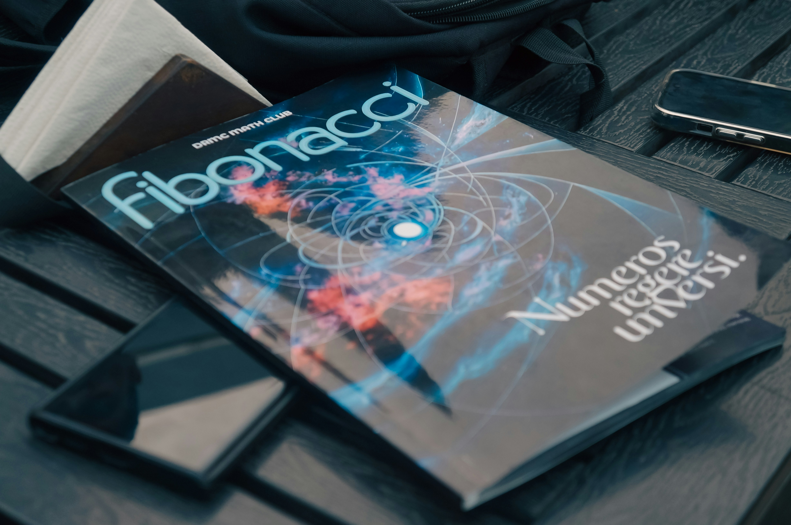
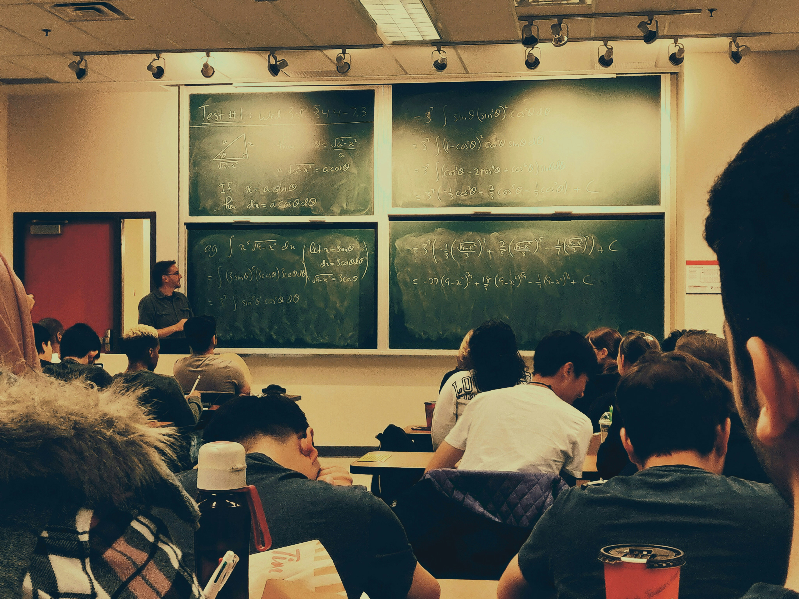

Reasoning Over Memorisation
"Memory is finite, but reasoning is boundless." This is not just a phrase — it is the lens through which I approach every problem. Mathematics taught me that the power is not in remembering formulas, but in understanding why they exist. I apply this to everything: I value the ability to derive over the ability to recall, and flexible thinking over rigid expertise.

Rigour & Intellectual Honesty
A proof is either correct or it is not. This mathematical culture of absolute rigour has shaped how I work in every field. I do not claim to know what I do not know. I document assumptions. I seek peer review. I distinguish between what the data shows and what I would like it to show. In an era of AI systems that can confidently produce wrong answers, intellectual honesty is not optional — it is essential.

Knowledge Shared Is Knowledge Multiplied
Mathematics gave me some of the most powerful tools I know — and I believe everyone deserves access to those tools. Teaching is not a side activity for me; it is a commitment to equity and one of my deepest passions. Over more than eight years, from Havana to Toulouse, I have had the privilege of guiding hundreds of students through analysis, algebra, and Python. I believe that a good teacher does not just transmit knowledge — they spark a way of thinking. Seeing a student suddenly understand a concept they thought was beyond them is one of the most rewarding moments in any professional life. Making knowledge accessible is one of the highest forms of contribution, and the best way to truly understand something is to explain it to someone else.